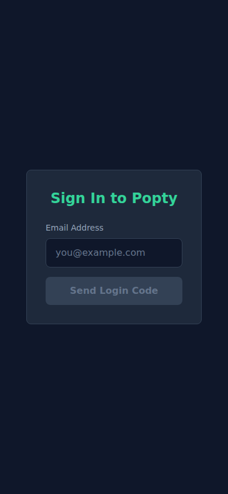
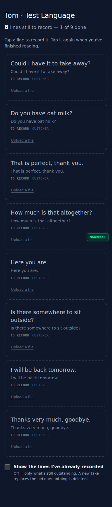
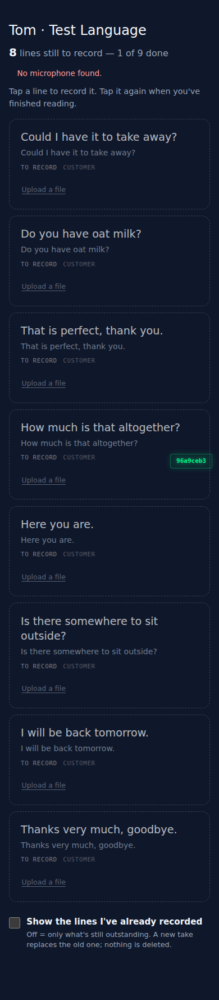
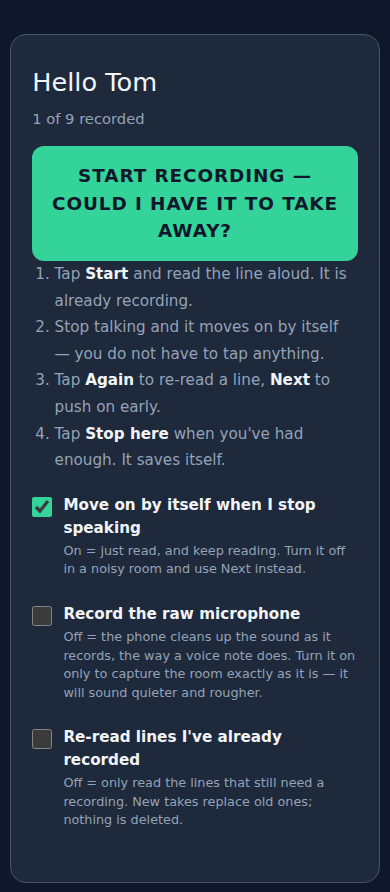

recordist my-lines staging verification — 2026-09-02
Probe user: e2e-mylines-probe@ssi-test.invalid (role=recorder, voice_id=human_tom_zzz). Real login form, password step. Viewport 390x844.
1. Login form

2. Post-login landing (redirects to /my-recording)

3. /my-recording — 8 outstanding lines

4. Tapped row 1 — headless has no mic device, "No microphone found"

5. /r/human_tom_zzz — link-is-identity surface, no login

Raw report.json
loading...